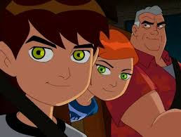
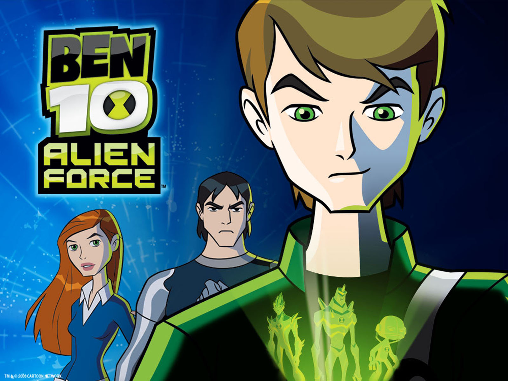
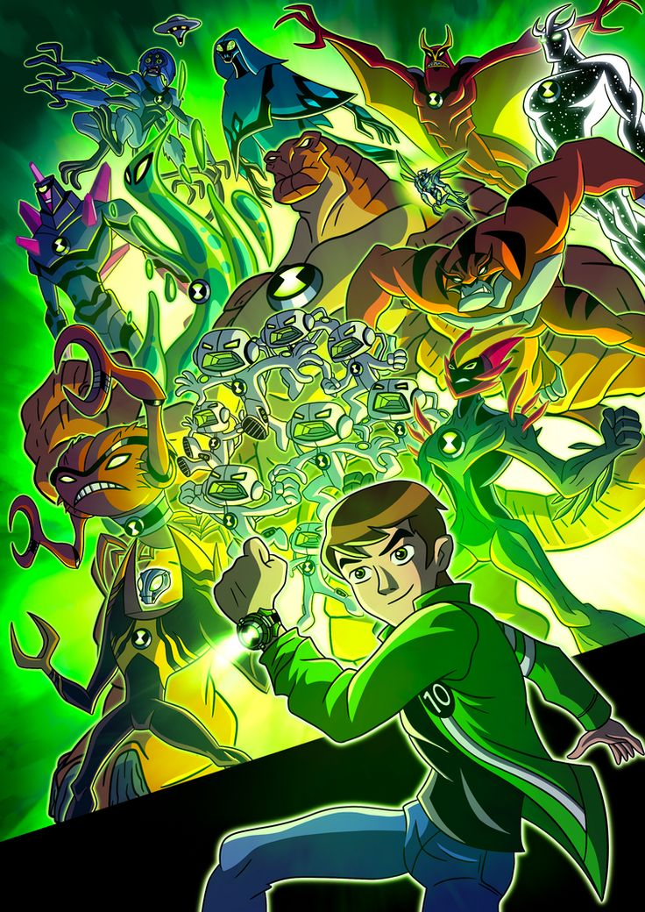

Ben 10:Secret of the Omnitrix
Season 1
Episode 1
.jpeg)
The Ben 10 storyline revolves around Ben Tennyson, a 10-year-old boy who discovers the Omnitrix,an alien device that allows him to transform into various alien creatures with unique powers. Joined by his cousin Gwen and grandfather Max, Ben uses these powers to fight villains and protect the world from extraterrestrial threats. The series chronicles Ben's journey as he learns to harness the Omnitrix's power and embrace the responsibilities of being a hero.
Episode 2
young Ben Tennyson is on a summer road trip with his Grandpa Max and cousin Gwen when he discovers the Omnitrix, an alien device that allows him to transform into various alien heroes
Season 2
Episode 1
Ben 10: Alien Force continues the story of Ben Tennyson five years after the original series. Now 15, Ben has abandoned the Omnitrix and his heroics until his Grandpa Max goes missing. Forced to re-embrace the Omnitrix, Ben teams up with Gwen and Kevin to find Max, battling new alien threats like the Highbreed, who aim to eradicate humanity.
Episode 2
Ben and a Highbreed commander are accidentally teleported to a desert planet due to a mishap with a teleport pod. They must put aside their differences and work together to survive and find a way back to Earth.